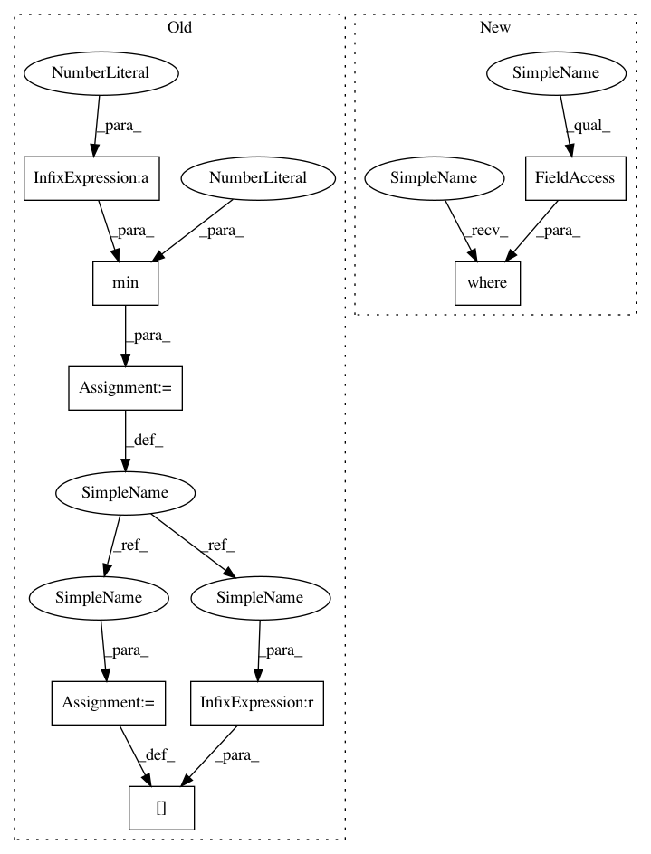

ecf62ac20ef561df4265c3d1abd8c59b1e73895f,tests/modules/test_threshold.py,,test_threshold_otsu3_volume,#,1006
Before Change
t_min = t_global_expected * 0.7
t_max = min(1.0, t_global_expected * 1.5)
t_local_expected[t_local_expected < t_min] = t_min
t_local_expected[t_local_expected > t_max] = t_max
numpy.testing.assert_almost_equal(t_global, t_global_expected)
assert t_local.ndim == 3
After Change
t_guide_expected = skimage.filters.threshold_multiotsu(data[mask], nbins=128)[0]
t_local_expected = numpy.zeros_like(data)
masked = numpy.where(mask, data, numpy.nan)
for index, plane in enumerate(masked):
t_local_expected[index] = module._get_adaptive_threshold(plane,
skimage.filters.threshold_multiotsu,
nbins=128,
In pattern: SUPERPATTERN
Frequency: 3
Non-data size: 8
Instances
Project Name: CellProfiler/CellProfiler
Commit Name: ecf62ac20ef561df4265c3d1abd8c59b1e73895f
Time: 2020-06-11
Author: dstirling@broadinstitute.org
File Name: tests/modules/test_threshold.py
Class Name:
Method Name: test_threshold_otsu3_volume
Project Name: CellProfiler/CellProfiler
Commit Name: ecf62ac20ef561df4265c3d1abd8c59b1e73895f
Time: 2020-06-11
Author: dstirling@broadinstitute.org
File Name: tests/modules/test_threshold.py
Class Name:
Method Name: test_threshold_otsu_volume
Project Name: CellProfiler/CellProfiler
Commit Name: ecf62ac20ef561df4265c3d1abd8c59b1e73895f
Time: 2020-06-11
Author: dstirling@broadinstitute.org
File Name: tests/modules/test_threshold.py
Class Name:
Method Name: test_threshold_otsu_image